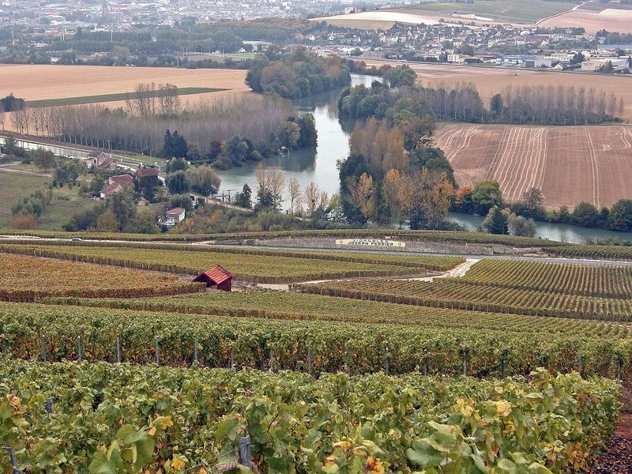

Dublin · Ashford Castle · London · Champagne · Nice
🎂 Birthday: Monday, June 7, 2027 at Ashford Castle ✓ Booked
Checked Nov 21, 2026 · prices for 2 adults · only Ashford is booked
10 nightsin Europe · Fri Jun 4 – Mon Jun 14
3 countriesIreland · UK · France
≈ $16,003flights, trains, hotels, bags & car, before food
$20kBenchmark
The plan
Day by day
Thu Jun 3
Fly SFO → Dublin
Porter via Toronto, 1:20 pm, lands Dublin 11:30 am Friday (14 h 10 min). One open-jaw ticket: in to Dublin, home from Nice on Mon Jun 14.
$1,802 economyRound trip for two, Google Flights · Aer Lingus nonstop $2,729 · cheapest $1,701 (TAP via Lisbon, 20 h) · San Jose and Oakland cost more ($2,222+) · checked bags not included, estimate below
Marriott pick: The Shelbourne, Autograph Collection, on St Stephen's Green, a short walk to Grafton Street and Trinity College. Platinum perks can apply (see below).
$1,824$912/night · Google Hotels · cheaper Marriott: The College Green Hotel, Autograph Collection · alt: InterContinental Dublin
Pick up a one-way rental car in Dublin and drive about 3 h to Cong. Check-in is from 3 pm. The car is only for the two transfers: Dublin → Ashford, then Ashford → Knock airport on Jun 8.
≈ $350Estimate: one-way rental with drop fee, plus fuel. Not priced live. A private driver costs more.
Sun Jun 6 – Tue Jun 8
✓ Booked🎂 Birthday · Mon Jun 7
Ashford Castle · 2 nights · her birthday
Junior Stateroom on the A Taste of Ireland package: a five-course dinner in the George V Dining Room, an Irish dinner in The Dungeon, afternoon tea, and breakfast both mornings. Birthday Mon Jun 7 at the castle. The Spa is open daily 8 am–7 pm (treatments 9:30 am–6 pm).Booked · deposit paid · free cancellation until May 23, 2027.
€7,120 (~$7,825)Total for two nights, taxes included
Drive 50 min to Ireland West Airport Knock and drop the car. Aer Lingus 1:05 pm → Heathrow 2:30 pm. Marriott pick: JW Marriott Grosvenor House on Park Lane, facing Hyde Park. The hotel says its Executive Lounge is free for Platinum members.
$172 + $1,054Flight $172 for two (Dublin → Heathrow $101–150, Ryanair Knock → Stansted $108) · hotel $527/night, Google Hotels · alt: InterContinental Park Lane
Eurostar 11:31 am St Pancras → Paris Nord 2:59 pm, then a 5-minute walk to Paris Est and the TGV to Reims (about 45 min). Marriott pick: La Caserne Chanzy Hotel & Spa, Autograph Collection, a converted fire station facing the cathedral, with a spa. Fri Jun 11 is for the champagne houses: cellars in Reims, or the train to Épernay (about 25 min) for the Avenue de Champagne.
$378 + ≈$100 + $590Eurostar Plus £288 for two, live on eurostar.com (Standard £180, Premier £660) · Paris → Reims TGV 1st class ≈ $100, estimate · hotel $295/night, Google Hotels · luxury alt: Royal Champagne Hotel & Spa $1,242/night
Train all the way: Reims → Paris Est (45 min), metro to Gare de Lyon, then a direct TGV INOUI to Nice (about 5 h 40 min). Door to door is about 7–8 hours. There is no direct train from Champagne-Ardenne TGV or Marne-la-Vallée to Nice; those routes change once or twice too. Marriott pick: Le Méridien Nice on the Promenade des Anglais, 15 min from the airport. Monaco is 25 min by local train.
≈$400 + $1,188TGV 1st class for two ≈ $400, estimate (2nd class ≈ $260). June 2027 French domestic fares aren't on sale yet · hotel $594/night, Google Hotels · alts: Le Méridien Beach Plaza Monaco, AC Hotel Nice, Le Negresco
Food: estimate $250–400 a day for two, 8 days ($2,000–3,200). Ashford's package already covers its dinners and breakfasts.
Car: only for Dublin → Ashford → Knock, an estimate.
All in, economy
$18,003–$19,203
flights, trains, hotels, bags, car and food · under the $20k benchmark
Economy only. Google Flights shows the cheapest fare type and doesn't say whether it's Basic or Standard. Before booking, compare the airline's Standard fare (seat choice, changes, sometimes a bag). If it's only a little more, take it. Trains in first class: Eurostar Plus is £108 more than Standard for two on the 11:31 am (live), and first class on the 6-hour TGV is about $140 more than second (estimate). Both gaps are small, so the plan uses first.
Ways to trim: Standard class on both trains saves about $280; TAP via Lisbon saves $101 but takes 20 h. Best single add-on: a third night in Nice, about $580 for the hotel plus food (that return date wasn't priced).
Sources: Google Flights and Google Hotels (nightly price with fees, 2 adults), hotels' own rates where shown, checked Nov 21, 2026. Eurostar: eurostar.com, live. SNCF Connect blocked automated checks, and June 2027 French domestic fares aren't on sale yet, so TGV fares are estimates. Ashford: booking confirmation. Food, bags and car are estimates.
Compare: 2/2/2, 3/3/3 and the previous plan
Same Ashford booking (Jun 6–8) in every version. Economy, 2 adults, Marriott picks. Trains in first class. The 3/3/3 version leaves Wed Jun 2 (United via Washington, 1:10 pm → Dublin 10:40 am), takes the Eurostar on Fri Jun 11 and the TGV to Nice on Sun Jun 13, and flies home Wed Jun 16.
$1,974: Porter via Toronto $1,802 + Knock–Heathrow $172
$2,456: United via Washington $2,284 + Knock–Heathrow $172
$2,458: Aer Lingus nonstop $2,037 + two short flights $421
Trains
$878: Eurostar Plus $378 (live) + TGV 1st ≈ $500 (estimate)
$773: Eurostar Plus $273 (live) + TGV 1st ≈ $500 (estimate)
–
Hotels
$12,481
$14,265
$14,570
Bags + car (estimates)
$670
$670
$410 + car (not priced)
Food (estimate)
$2,000–3,200 (8 days)
$2,750–4,400 (11 days)
$3,250–5,200
All in
$18,003–19,203
$20,914–22,564
$20,688–22,638 + car
vs $20k
Under, by $800–2,000
Over, by $900–2,600
Over, plus the car
Pick: 2/2/2. It's the only version under $20k, every move is one simple step (drive, short flight, Eurostar, TGV), and no stop is a single night. 3/3/3 is more relaxed but about $3,000 more, and over the benchmark. If you want one extra night, add it in Nice.
Champagne options: La Caserne Chanzy, Autograph Collection (Marriott, Reims) $295/night · luxury: Royal Champagne Hotel & Spa $1,242/night · Domaine Les Crayères $1,282/night.
Marriott Platinum Elite
Christoph is Lifetime Platinum Elite. At the Marriott picks (The Shelbourne, Grosvenor House, La Caserne Chanzy, Le Méridien Nice) that usually means:
A room upgrade at check-in when one is available, sometimes to a suite.
Executive lounge access where the hotel has one (Grosvenor House says it's free for Platinum), otherwise a welcome gift that is often breakfast, depending on the brand.
4 pm late checkout on request, depending on availability.
None of it is guaranteed. The prices above are public Google Hotels rates; Bonvoy member rates and points prices weren't visible.

Good to know
Why Ashford, not Adare: Adare Manor's main house and spa are closed Apr 30 – Sep 27, 2027 to get ready for the Ryder Cup (notice), so the birthday moved to Ashford, with its spa open.
Irish bank holiday: Mon Jun 7, 2027 is the June bank holiday in Ireland, so Dublin and the west are busier that weekend.
Monaco Grand Prix: Jun 4–6, 2027 (formula1.com). Over before you reach the Riviera.
Trains: Eurostar for June 2027 is already on sale. French TGV tickets usually open a few months ahead, so book the Reims and Nice legs when they appear.
Only Ashford is booked. Every other price was checked live on Nov 21, 2026 and will move.